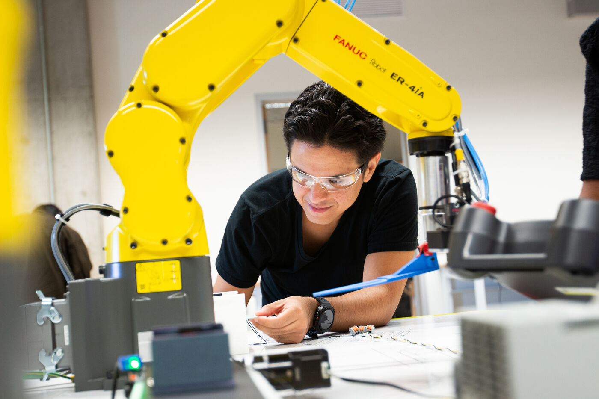
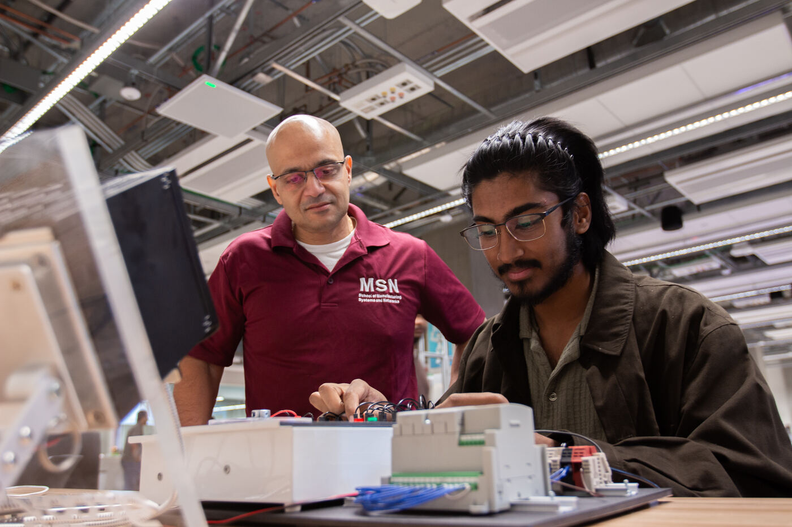
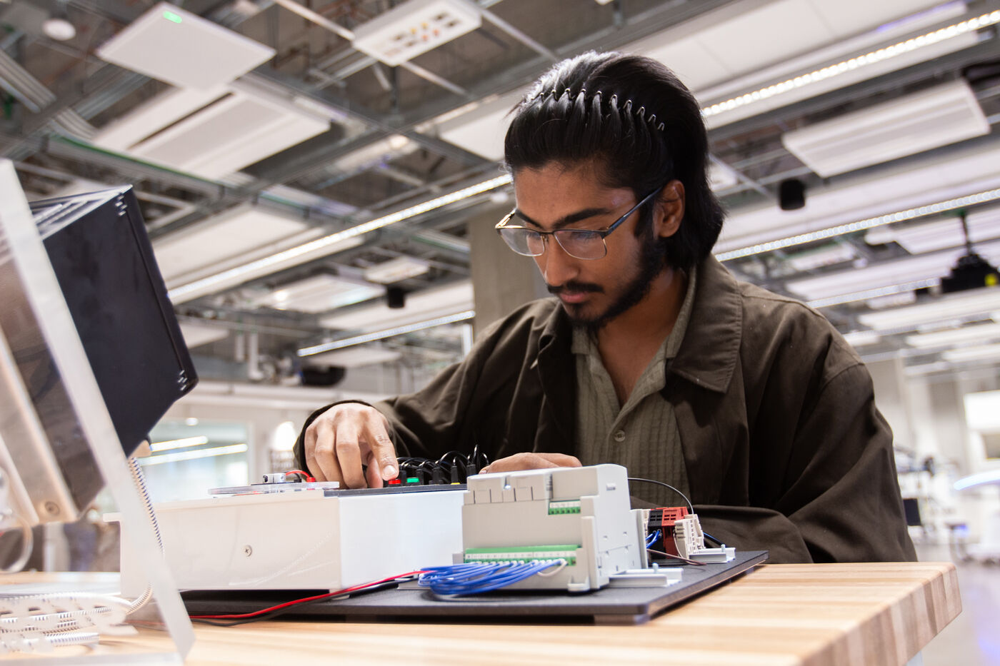
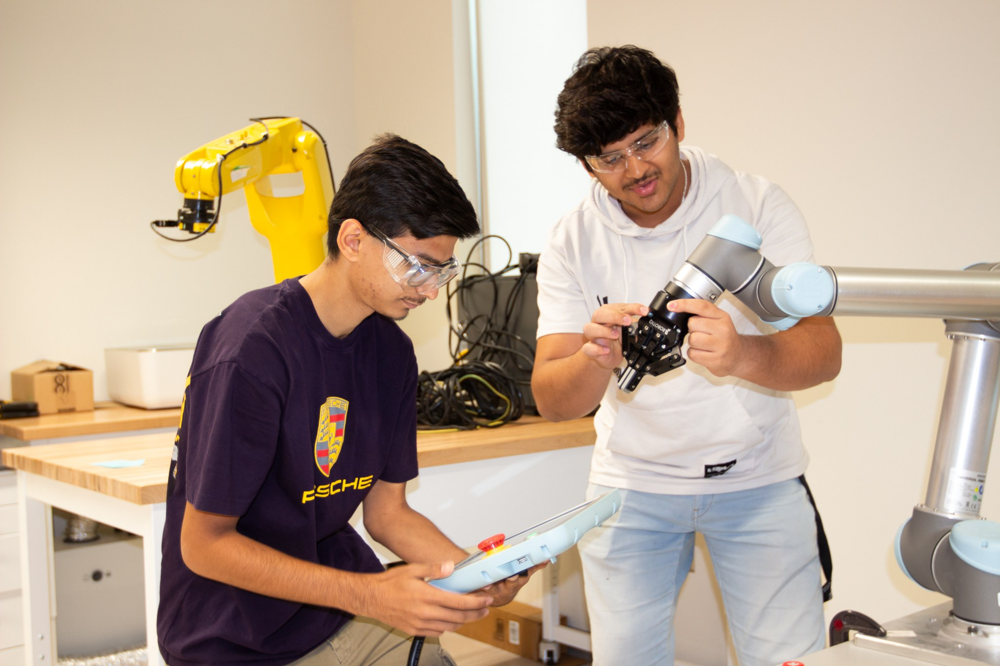
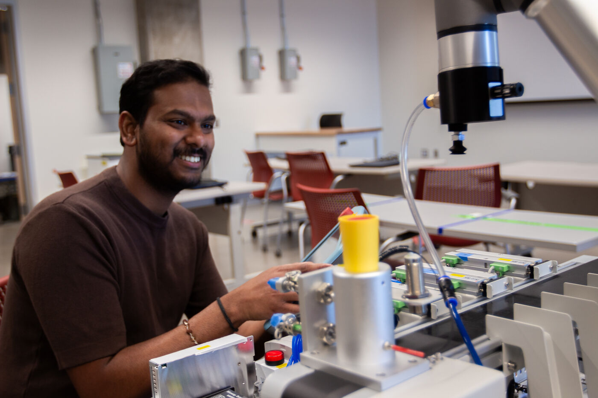
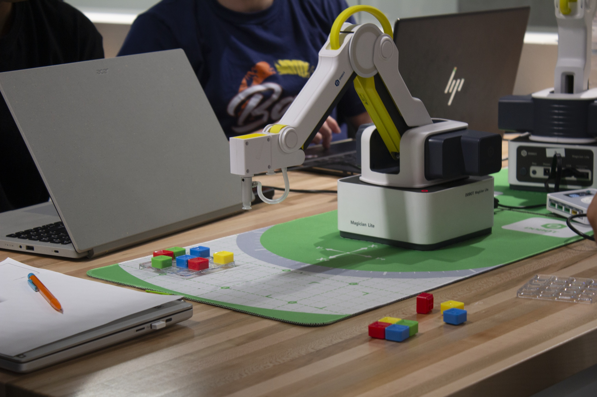
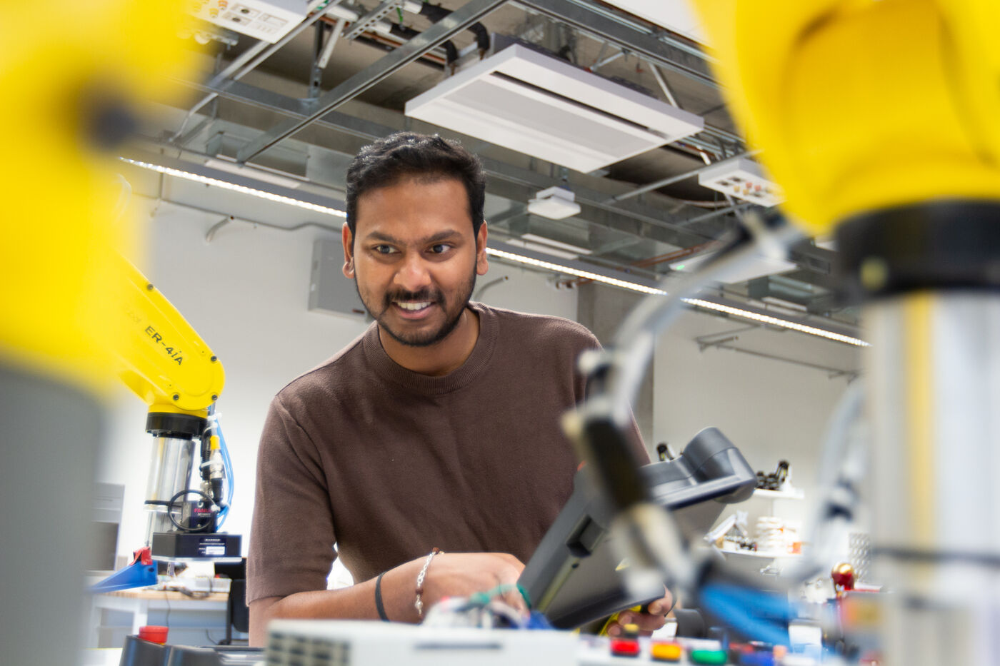
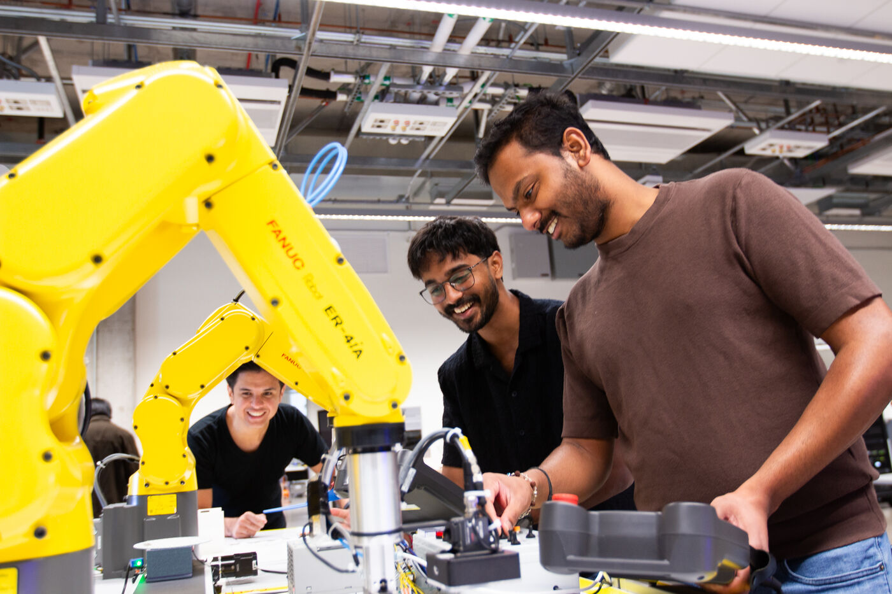
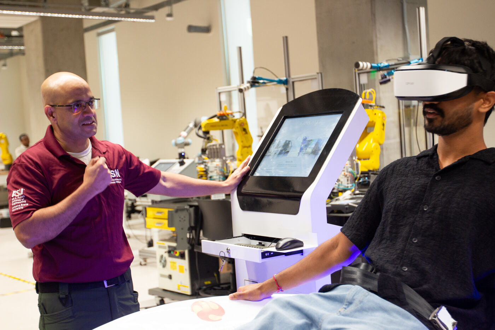

Course

RAS 545 - Robotic Systems I
Graduate coursework in robotic systems, with guided laboratories that move from simulation in NVIDIA Isaac Sim to real robot hardware.
About
The Robotics Systems Instructional Lab is a teaching laboratory in the School of Manufacturing Systems and Networks, part of the Ira A. Fulton Schools of Engineering at Arizona State University. It opened with ISTB 12 - the Interdisciplinary Science and Technology Building on the Polytechnic campus in Mesa, Arizona - in fall 2025.
The lab supports hands-on instruction in robotics and industrial automation: students program collaborative and industrial robot arms, work with programmable logic controllers (PLCs), and complete guided laboratories in physics-based simulation. Its courses serve the Robotics and Autonomous Systems degree programs.
The lab's work is supported and built through the leadership of Prof. Sangram Redkar, Professor and Associate Director in the School of Manufacturing Systems and Networks. Under his direction, his research group and teaching team developed the lab's robot cells, PLC workbenches, and the guided laboratory series published on this site.

Prof. Sangram Redkar, the lab's faculty lead.

Robots at work in the lab.
The lab's instruction is led by Prof. Sangram Redkar, Professor and Associate Director in the School of Manufacturing Systems and Networks, whose work spans robotics, dynamics and control systems.

Teaching in the lab.
Course

Graduate coursework in robotic systems, with guided laboratories that move from simulation in NVIDIA Isaac Sim to real robot hardware.
More

The full picture: what is taught in the lab, industry training, and related RAS and manufacturing courses.
Instruction in the lab centers on the same kinds of systems used in modern manufacturing and robotics work:
Industrial robots

Industrial robot arms of the kind widely used on production lines, including the FANUC ER-4iA.
Collaborative robots

Universal Robots collaborative robot arms ("cobots").
Collaborative robots

General lab photo - the named equipment is not pictured.
Lightweight collaborative arms used for pick-and-place and assembly exercises.
Desktop robots

Compact desktop robot arms used for introductory programming instruction.
Industrial automation

Programmable logic controllers - the industrial computers that run automated machinery.
Additive manufacturing

General lab photo - the named equipment is not pictured.
Bambu X1 Carbon, large industrial, and resin printers - building parts layer by layer for prototypes, fixtures, and research.
Subtractive manufacturing

General lab photo - the named equipment is not pictured.
Computer-controlled machining up to 5 axes, with robots tending the machine tools.
Simulation

Physics-based robot simulation used for the lab's guided instructional laboratories.